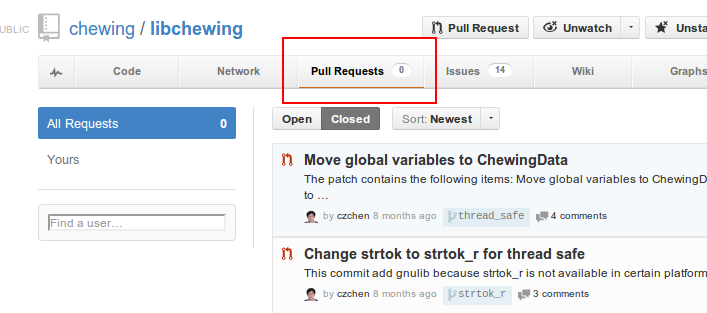

Joining libchewing Development
ChangZhuo Chen(https://github.com/czchen)
LICENSE
Outline
- My First Contribution
- Coverage & Unit Test
- Valgrind & AddressSanitizer
- CMake
- Travis-ci & Launchpad Integrated
- Stress Test Script
One day in Hacking Thursday
- czchen: 新酷音這部份的 code 是作啥用的阿
- kanru: ???
- czchen: ...
coding → buildin → testing → coding → ...
衝了
Send pull request

感覺 Unit Test 有點少，會不會改出問題阿？
coding → buildin → testing → coding → ...
Fixed

為了避免再次發生問題，來研究一下 Unit Test 吧
先來個 coverage report
dnl Enable gcov for coverage test
AC_ARG_ENABLE(
[gcov],
AS_HELP_STRING(
[--enable-gcov],
[Turn on gcov support @<:@default=no@:>@]),
AS_CASE(
[${enableval}],
[yes], [ENABLE_GCOV="true"],
[ENABLE_GCOV="false"]),
[ENABLE_GCOV="false"])
AS_IF([test x$ENABLE_GCOV = x"true"],
[AM_CFLAGS="$AM_CFLAGS --coverage"])
Sad
Windows 32-bits
用起來很簡單，只要 s/apt/mingw/
mingw-get install automake
mingw-get install autoconf
mingw-get install libtool
./autogen.sh
./configure
make
有些小問題，不過是可用的
CR/LF → CR
git config core.autocrlf input
rm -rf *
git reset --hard
Windows 顯示亂碼
chcp 65001
Windows 64-bits
CMake
Launchpad
Stress Test Script
commit 496cd753b7e6ce1e5c21fa574ce3e8d9cc07ed58
Author: Kuang-che Wu <kcwu@csie.org>
Date: Fri Jan 18 17:23:33 2013 +0800
Add script to run stress test
test/stresstest.py
We are hiring
Send a pull request to https://github.com/chewing/libchewing 